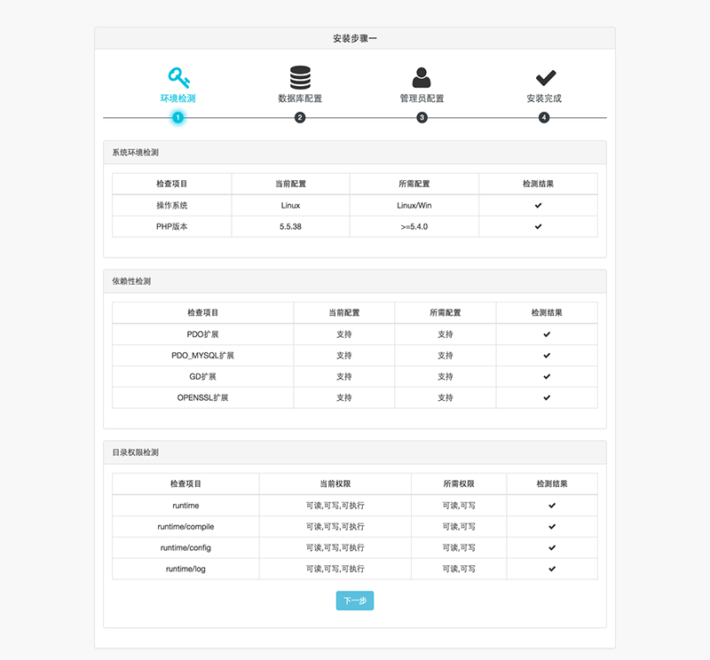
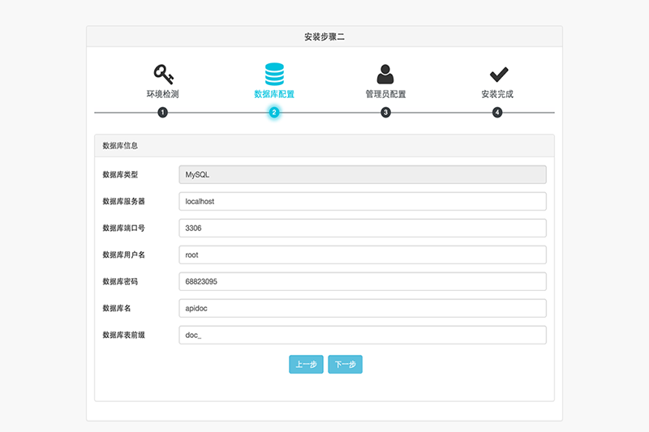
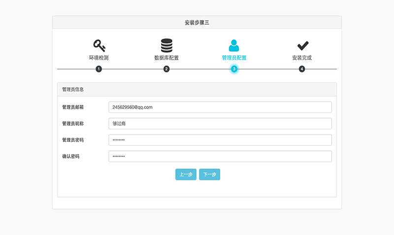
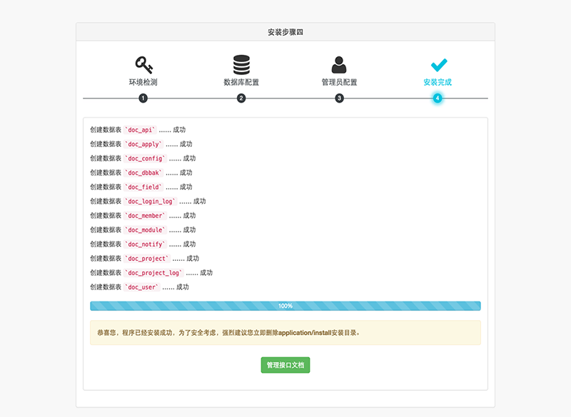

git clone https://github.com/gouguoyin/phprap.git -b 'stable'git clone https://gitee.com/gouguoyin/phprap.git -b 'stable'下载源码，上传到服务器上后解压
将域名绑定到public目录上
runtime目录及子目录给予可读可写权限
如果你的服务器环境支持ISAPI_Rewrite的话，可以配置httpd.ini文件，添加下面的内容：
RewriteRule (.*)$ /index\.php\?r=$1 [I]httpd.conf配置文件中加载mod_rewrite.so模块
将AllowOverride None 改为 AllowOverride All
把下面的内容保存为.htaccess文件放到应用入口文件的同级目录下，默认放在public目录下
RewriteEngine on
RewriteCond %{REQUEST_FILENAME} !-d
RewriteCond %{REQUEST_FILENAME} !-f
RewriteRule ^(.*)$ index.php?r=/$1 [QSA,PT,L]
如果是部署在根目录下，在Nginx.conf中配置转发规则
location / {
try_files $uri $uri/ /index.php?r=$uri&$args
}打开浏览器，访问域名，会自动跳转到安装界面运行安装程序
Note: 如果要重新安装，请先删除
runtime/install.lock，否则会提示程序已安装



